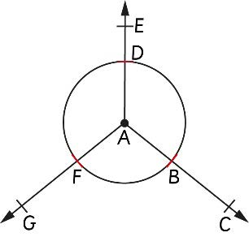

Mfano wa 3
Andika majina ya miale yote katika mchoro ufuatao.

Jibu
Katika mchoro huu kuna miale ifuatayo:
AB, AC, BC, AD, AE, DE, AF, AG na FG.
Kazi ya kufanya 4: Kuchora mstari mnyoofu
1.
Tumia rula kuchora miale miwili; mmoja ukielekea kushoto na mwingine kuelekea kulia.
2.
Unganisha nukta za mwanzo za miale miwili katika hatua ya 1 ili kupata mstari ulionyooka.
Zoezi la 2
1.
Chora vipande viwili vya mistari na utaje majina yake.
2.
Chora mistari minyoofu mitatu, kisha taja majina yake.
3.
Taja tofauti kati ya kipande cha mstari na mstari mnyoofu.
4.
Je, unaweza kuchora kipande cha mstari cha sm 4 bila kutumia rula?
Eleza sababu ya jibu lako.
5.
Chora mwale XY na mwale YX.
6.
Taja tofauti kati ya kipande cha mstari na mwale.